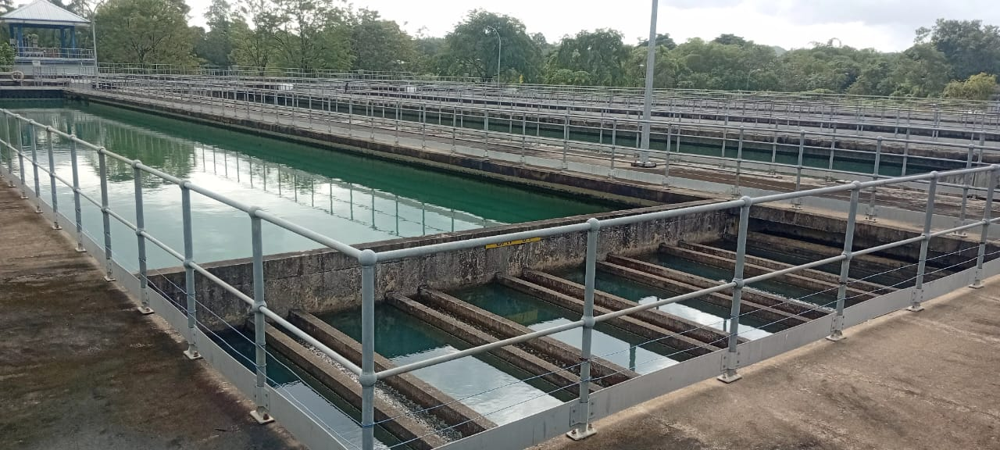
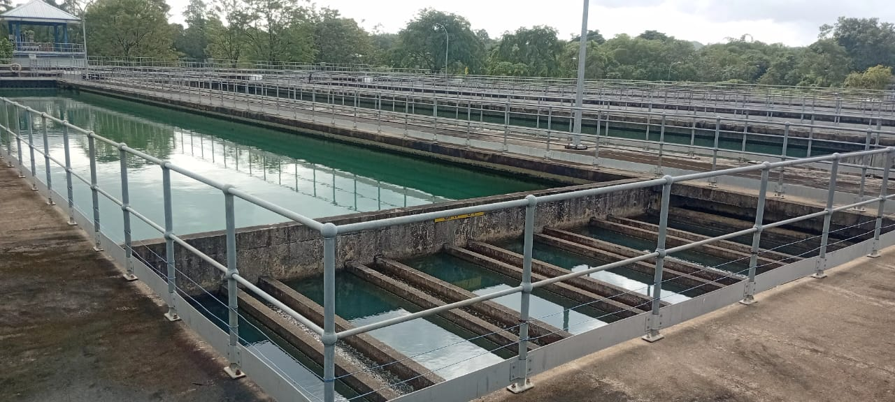
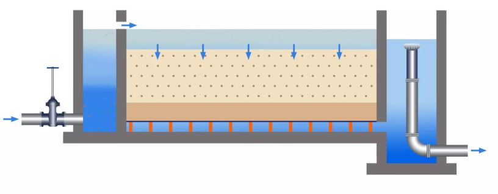

05. Filtration
Sedimentation ටැංකි තුලදී තැම්පත් නොවූ ඉතා කුඩා මඩ අංශු( Fine Particles) ඉවත් කර ගැනීම සඳහා මෙම ජලය පෙරීමකට ලක් කල යුතුවෙනවා. ඒ සඳහා කඳන ජලපවිත්රාගාරය තුළ වැලි පෙරණ (Sand Filters) අටක් පවතී.
බරින් වැඩි මඩ(suspended solids) Sedimentation ටැංකිවල තැම්පත් වීමෙන් අනතුරුව ඉතා කුඩා මඩ අංශු සහිතව Sedimentation ටැංකි වලින් පිටවන ජලය(settled water) පොදු නළයක් (common channel) දිගේ පැමිණ වැලි පෙරණ (sand filters) අට වෙත බෙදී යාම සිදුවේ.
මෙසේ වැලි පෙරණ තුළට ඇතුල්වල ජලය මීටර් එකක් පමණ උසින් යුත් වැලි තට්ටුව හරහා ගොස් පහතින් ඇති පොදු ටැංකියක් වෙත එකතුවීම සිදුවේ.
මෙසේ වැලි හරහා ගමන් කිරීමේදී,
* Sedimentation ටැංකිවලින් පසු ඉතිරිවන fine particles ඉවත් කරයි.
* ජලයේ පැහැපත්භාවය (clarity) වැඩි කරයි.
* රස සහ ගඳ වලට බලපාන කුඩා අමුද්රව්ය ඉවත් කරයි.
* නිවාස හා කර්මාන්ත ශාලා වෙත යන ජලය තවත් පිරිසිදු කරයි.
මෙසේ වැලිපෙරණ වලින් පෙරී එන පිරිසිදු ජලයහි ආම්ලිකතාවය (pH අගය) නිවැරදි පරාසයට ගෙන ඒම සඳහා හුණු (post lime) මිශ්ර කිරීම සිදුකරයි. මේ සඳහා සංතෘප්ත හුණු (saturated lime)භාවිතා කරන අතර සංතෘප්ත හුණු සෑදීම සඳහා Lime Saturator එකක් භාවිතා කරයි.
ඉන් අනතුරුව ජලයෙහි පවතින රෝගකාරක ක්ෂුද්ර ජීවීන් (microorganisms) විනාශ කිරීමට ක්ලෝරීන් යෙදීම (chlorination) සිදුකරයි. මේ සඳහා ක්ලෝරීන් වායුව (chorine gas) භාවිතා කරයි.
ක්ලෝරීන් එක් කරනු ලැබූ ජලය කඳන ජලපවිත්රාගාරයේ ඇති පිරිසිදු ජල ටැංකියවෙත (Treated Water Tank [6400 m3]) යොමු කරන අතර එම ජලය High Lift Pumps මගින් ඇල්ල කන්ඳ ජල ටැංකිය (High Level Reservior [15000 m3) වෙත පොම්ප කිරීම සිදුකරයි.
.jpeg) 

වැලි පෙරණ පිරිසිදු කිරීම (Backwash)
වැලි පෙරණ තුළින් යම් කාලයක් ජලය ගමන් කිරීමේදී ජලයේ ඇති මඩ අංශු හා වෙනත් ද්රව්ය වැලි අතර රැදීම හේතුවෙන් ජලය පෙරීමේ සීඝ්රතාවය ක්රමයෙන් අඩුවේ. මෙම අවස්තාවේදී වැලි පෙරණ තුළ ඇති ජලයේ උස වැඩිවීම සිදුවේ. මෙවන් අවස්ථාවලදී මෙම වැලි පෙරණ වල වැලි සේදීමකට ලක් කල යුතුය එය Backwash කිරීම ලෙස හදුන්වයි.
කඳන ජල පවිත්රාගාරයෙහි වැලි පෙරණ සේදීම ස්වංක්රීයවම (Auto Mode) යම් කිසි කාල පරාසයකින් (Time Base) පසුව හා වැලි පෙරණයෙහි ඇති ජලයේ උස (Level Base) අනුව ක්රියාත්මක වීම සිදුවේ. මීට අමතරව අවශ්යතාවය මත ඕනෑම වේලාවක (Manual Mode) සිදු කරීමේ හැකියාවද පවතී.
වැලි පෙරණ පිරිසිදු කිරීමේ (Backwashing) ක්රියාවලිය
- වැලි පෙරණයට ජලය සපයන ඇතුළු දොරටුව (Inlet Gate) වසා, පෙරණය තුළ පවතින ජලය අඩුවෙන තෙක් රැඳී සිටීම.
- ජල මට්ටම පහළ වූ විට කාණු දොරටුව (Drain Valve) විවෘත කර, ජලය බැස යාමට සැලැස්වීම හා පිටවීමේ දොරටුව(Outlet Gate) වැසීම.
- අධි පීඩන වායු ලබා දී, වැලි මත රැඳී ඇති මඩ හා දූවිලි කැලැත්තීම.
- කැතුණු මඩ ඉවත් කිරීම සඳහා පෙරණය තුළට පිරිසිදු ජලය ලබා දීම.
- නිකාස වන ජලය නිරීක්ෂණය කර, දුඹුරු වර්ණය ඉවත් වී පැහැදිලි වන තුරු Backwashing දිගටම කිරීම.
- පැහැදිලි ජලය නිකාස් වූ පසු කාණු දොරටුව වැසීම.
- ඇතුළු දොරටුව (Inlet Gate) විවෘත කර, සාමාන්ය ජල සැපයුම ආරම්භ කිරීම.
- අවසානයේ පිටවීමේ දොරටුව (Outlet Gate) විවෘත කර, පිරිසිදු ජලය ජල පරිභෝජන පද්ධතියට යැවීම.
Details of the Filtration System
| Type | Constant-rate sand filter with influent splitting and varying water level |
| No of Filters | 8 Nos |
| Filter Dimensions | 7.2m × 10.8m (78 m²) |
| Total Filtration Area | 624 m² |
| Filtration Rate | 200 m/d (approx. 270 m/d during washing) |
| Filter Media |
Crushed & Graded Rock (Sand), 1200 mm thickness Effective media size = 1.0 to 1.2 mm Uniformity Coefficient < 1.5 |
| Filter Washing | Combination of backwash & air scouring |
| Backwash Rate | 0.25 m³/m²/min [3 pumps (2 duty, 1 standby) / Rated capacity 162 l/s & 8m head] |
| Air-Scouring | 1.0 m³/m²/min [3 Air Blowers (2 duty, 1 standby) / Rated capacity 650 l/s & 0.343 bars] |
| Backwash Water Collection Tank Capacity | 247 m³ |
Sand Filters in Water Treatment Plants
-
-
Sand filters are one of the most commonly used filtration methods in water treatment plants. They play a key role in removing suspended solids, turbidity, and microorganisms from raw water, making it cleaner and safer for consumption.
Working Principle
-
Sand filters work on a physical filtration process where water passes through multiple layers of sand and gravel. As the water flows downward:
* Larger particles get trapped on the upper layer.
* Smaller suspended particles are removed in the middle layers.
* The finest impurities and microorganisms are filtered out in the bottom layers.
This process not only improves water clarity but also reduces contaminants that affect taste and odor.
-
Slow Sand Filters (SSF)
- Operates at low flow rates.
- Highly effective in removing bacteria and organic matter.
- Requires a biological layer (schmutzdecke) on top for effective filtration.
-
Rapid Sand Filters (RSF)
- Works at higher flow rates.
- Requires frequent backwashing to clean the sand bed.
- Often used in combination with coagulation and sedimentation.
- Inlet Chamber – where raw water enters.
- Filter Bed – layers of sand and gravel arranged from fine to coarse.
- Underdrain System – collects the filtered water and prevents sand loss.
- Outlet/Filtered Water Tank – stores treated water before further treatment or distribution.
- Simple and cost-effective.
- Requires low maintenance compared to other filtration systems.
- Provides good removal of turbidity, color, and microorganisms.
- Can handle large volumes of water.
Types of Sand Filters
Structure of a Sand Filter
A typical sand filter unit includes:
Advantages
-